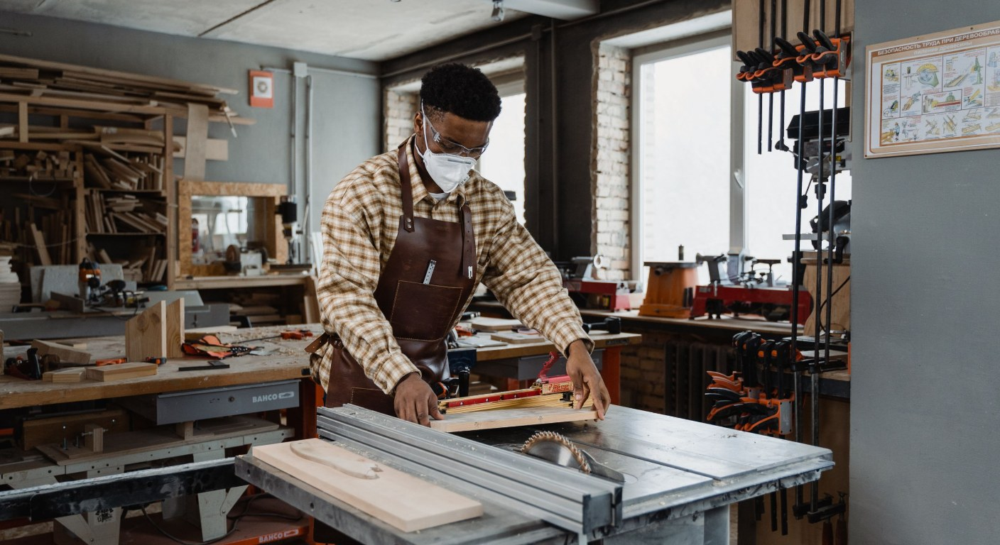

Selected Work — 07 / 08
Quarry Lane Workshop
Workplace · Hamilton, ON · 2023

A cabinetmaker moving out of a garage and into a real workshop: three brick piers, two tall windows and a floor that had to stay clear enough to walk a two-metre board through.
The machines arrived before the drawings did. The table saw sits on the window axis with four metres of clear feed either side, and everything else — assembly benches, the tool wall, the timber racks — is arranged to keep that run free, because a workshop is only as good as its longest straight line.
The change is mostly in the envelope: the brick piers were repointed rather than covered, the ceiling was stripped back and insulated to take the sawdust out of the air supply, and the lighting was replaced with continuous linear fittings over the benches only, so the glare never crosses a cutline.
The timber racks are the studio-standard blackened steel and were made by the client, which is the honest way to fit out a workshop.
- Type
- Workplace · Hamilton, ON
- Completed
- 2023
- Area
- 260 m² (2,800 sq ft)
- Scope
- Workshop fit-out, services, dust extraction
- Timeline
- 9 months, completed autumn 2023
- Team
- Nadia Ostrow, with J. Alvarez
- Material
- Exposed brick, blackened steel, polished concrete, oak
The drawing
Drawn before it was built.
Every study in this studio starts as a plan, and the plan is where the argument is actually won or lost. This one is shown at the scale it was worked at.
07 — Quarry Lane Workshop, working drawing
Drawing over photograph


Next study — 08 / 08
Morse Street Reading Room
The library as furniture: one ash joinery system, and every table has a lamp and a view of a window.
Read the study →Start something
Working on a project like this one?
Tell us about the site, the brief and the constraints. Every project is bespoke, so the first conversation is about how you actually want to live or work in the space.